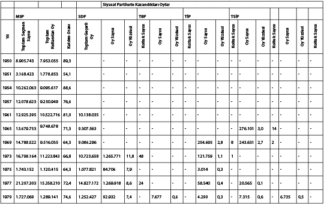

EKLER
EK III
Türkiye’de Hükümet Değişiklikleri (Başbakanlar), 1970-1980
1. Süleyman Demirel, 6 Mart 1970-12 Mart 1971
2. Nihat Erim, 26 Mart 1971-3 Aralık 1971
3. Suat Hayri Ürgüplü, 14 Mayıs 1972 (güvenoyu alamamıştır)
4. Ferit Melen, 22 Mayıs 1972-10 Nisan 1973
5. Naim Talu, 15 Nisan 1973-25 Ocak 1974
6. Bülent Ecevit, 25 Ocak 1974-7 Kasım 1974
7. Sadi Irmak, 13 Kasım 1974-30 Mart 1975
8. Süleyman Demirel, 31 Mart 1975-21 Haziran 1977
9. Bülent Ecevit, 21 Haziran 1977-21 Temmuz 1977
10. Süleyman Demirel, 21 Temmuz 1977-5 Ocak 1978
11. Bülent Ecevit, 5 Ocak 1978-12 Kasım 1979
12. Süleyman Demirel, 12 Kasım 1979-12 Eylül 1980
EK IV
GENEL SEÇİM SONUÇLARI (1950-1979*)
Başbakanlık İstatistik Kurumu tarafından yayımlanan resmî seçim sonuçları, s. 586-587. 1951, 1975 ve 1979 yıllarına ait sayılar, yalnızca birkaç bölgede yapılan ara seçimlerin sonuçlarıdır.
Tablolarda kısaltmaları verilen siyasal partilerin isimleri şunlardır: : AP (Adalet Partisi); CHP (Cumhuriyet Halk Partisi); CGP (Cumhuriyetçi Güven Partisi); CKMP (Cumhuriyetçi Köylü Millet Partisi); CMP (Cumhuriyetçi Millet Partisi); DP (Demokrat Parti); HP (Hürriyet Partisi); MP (Millet Partisi); MNP (Milli Nizam Partisi); MSP (Milli Selamet Partisi); SDP (Sosyalist Devrim Partisi); TBP (Türkiye Birlik Partisi); TİP (Türkiye İşçi Partisi); TSİP (Türkiye Sosyalist İşçi Partisi); YTP (Yeni Türkiye Partisi); BAĞ (Bağımsızlar).

KAYNAKLAR
5.CHP Büyük Kurultayı, Ankara, Ulus Basımevi, 1939.
ABADAN, Nermin: Batı Almanya’daki Türk İşçileri ve Sorunları, Ankara, 1964.
AHMAD, Feroz: The Young Turks, The Committee of Union and Progress in Turkish Politics, Oxford, 1969.
AKKERMAN, Cevat Naki: Türkiye’de Siyasi Partiler Hakkında Kısa Notlar, Ankara, 1950.
AKURGAL, Sabri - GÖKALP, Ziya: The Influence of His Thought on Kemalist Reforms (Doktora tezi), Indiana Üniversitesi, 1978.
ALDIKAÇTI, Orhan: “Les Elections Législatives Turques au 27 Octobre 1957”, Annales de la Faculté de Droit d’Istanbul, No. 8 (1958), s. 128-37.
ALDIKAÇTI, Orhan: Anayasa Hukukumuzun Gelişmesi ve 1961 Anayasası, 2 cilt, İstanbul, 1964.
ALEXANDER, Alec P.: “Industrial Entrepreneurship in Turkey”, Economic Development and Cultural Change, Temmuz 1960.
AMCA, Hasan: Doğmayan Hürriyet, İstanbul, 1948.
ARAR, İsmail: Atatürk’ün İzmit Basın Toplantısı, İstanbul, Burçak, 1969.
ARIBURNU, Kemal: Milli Mücadele ve İnkılaplarla İlgili Kanunlar, Ankara, 1957.
Atatürkçülük Nedir?, Yaşar Nabi (der.), İstanbul, 1963.
AVCIOĞLU, Doğan: Milli Kurtuluş Tarihi, İstanbul, 1974.
AYBAY, Rona: Karşılaştırmalı 1961 Anayasası, İstanbul, 1964.
AYDEMİR, Ş.S.: Tek Adam, 3 cilt, İstanbul, 1969.
BALKANLI, Remzi: Mukayeseli Basın ve Propaganda, Ankara, 1961.
BAŞGİL, Ali Fuad: İlmin Işığında Günün Meseleleri, İstanbul, 1960.
BERKES, Niyazi: The Development of Secularism in Turkey, Montreal, 1964.
BERKES, Niyazi: Turkish Nationalism and Western Civilization, Selected Essays on Ziya Gökalp, Londra, 1959.
BİLSEL, Cemil: “The Turkish Straits in the Light of Recent Turkish-Soviet Russian Correspondence”, American Journal of International Law (Ekim 1947), s. 727.
Bir Şakirdin Hataları, İstanbul, 1934.
BIYIKLIOĞLU, Tevfik: Trakya’da Milli Mücadele, 2 cilt, Ankara, 1955-56.
BORATAV, Korkut: Gelir Dağılımı Kapitalist Sistemde, Türkiye’de, Sosyalist Sistemde, İstanbul, 1963.
BULUTAY, Tuncer: “Türk Toplumsal Hayatında İktisadi ve Siyasi Gelişmeler”, Siyasal Bilgiler Fakültesi Dergisi (Eylül 1970), s. 79-119.
Capital Formation and Investment in Turkey (Birinci Konferans), İstanbul, 1968.
CHP Genel Sekreteri R. Peker’in Söylevleri, Ankara, Ulus Basımevi, 1935.
COHN, Edwin J.: Turkish Economic, Social and Political Change, New York, 1970.
ÇARIKLI, Hacım Muhittin: Balıkesir ve Alaşehir Kongreleri, Türk Tarih Derneği Yayınları, Ankara, 1967.
Çerkes Ethem’in Hatıraları, İstanbul, 1962.
Çeşitli Cepheleriyle Atatürk (Robert Koleji’nde düzenlenen bir konferanstan), İstanbul, 1964.
DANİŞMEND, İsmail H.: 31 Mart Vakası, İstanbul, 1961.
Department of State Bulletin, 14 Şubat 1956, s. 261.
DEVEREUX, Robert: The First Ottoman Constitutional Period, Baltimore, 1963.
DURSUNOĞLU, Cevat: Milli Mücadelede Erzurum, Ankara, 1946.
ENER, Kasım: Çukurovanın İşgali ve Kurtuluş Savaşı, İstanbul, 1963.
ERGİL, Doğu: Türkiye’de Terör ve Şiddet, Yapısal ve Kültürel Kaynaklar, Ankara, 1980, s. 105-167.
GEORGEON, François: Aux Origines du Nationalisme Turc, Yusuf Akçura, 1876-1935, Institut d’Etudes Anatoliennes, Paris, 1980.
GLASNEK, Johannes: Ataturk und Die Moderne Turkei, Berlin, 1971.
GOLOĞLU, Mahmut: Milli Mücadele Tarihi, 5 cilt, Ankara, 1968-71.
GOLOĞLU, Mustafa: Erzurum Kongresi, Sivas Kongresi, Üçüncü Meşrutiyet, Cumhuriyete Doğru ve Türkiye Cumhuriyeti, Ankara, 1968-72.
GÖZÜBÜYÜK, Şeref - KİLİ, S.: Türk Anayasa Metinleri, Ankara, 1947.
GÜVEN, Zuhdil: Anzavur İsyanı, İstanbul, 1948.
HALE, William: “Particularism and Universalism in Turkish Politics”, Aspects of Modern Turkey, W.M. Hale (der.), Londra, 1976.
HARRIS, George S.: Origins of Communism in Turkey, Stanford, California, 1967.
HİKMET, Nazım: Anthologie Poétique, Paris, 1964.
İĞDEMİR, Uluğ: Sivas Kongresi Tutanakları, Ankara, 1969.
İnkılap Tarihi, Ankara, Ulus Basımevi, 1935.
International Social Science Journal, XI, 4 (1959), s. 525-31.
ISSAWI, Charles: The Economic History of the Middle East 1800-1914, Chicago, 1966.
İstanbul Üniversitesi Yayınları ve özellikle Problems of Turkey’s Economic Development, Cilt I, İstanbul, 1972.
JÄSCHKE, Gotthard: “Der Islam in der neue Turkei”, Die Welt des Islams, Cilt I, 1951.
KARPAT, Kemal H.: “Mass Media”, Political Modernization in Japan and Turkey, R. Ward ve D. Rustow (der.), Princeton, 1964.
KARPAT, Kemal H.: “The Ottoman Parliament of 1877 and Its Social Significance”, Proceedings of the International Association of South-East European Studies, Sofya, 1963.
KARPAT, Kemal H.: “The People’s Houses in Turkey: establishment and growth”, Middle East Journal, 17 (1963), s. 55-56.
KARPAT, Kemal H.: (der.), Turkey’s Foreign Policy in Transition, Leiden, 1974.
KARPAT, Kemal H.: Social Change and Politics in Turkey, Leiden, 1973.
KARPAT, Kemal H.: The Gecekondu, Rural Migration and Urbanization in Turkey, New York, Londra, Melbourne, 1976.
KARPAT, Kemal H.: Turkey’s Politics, Princeton, 1959.
KARPAT, Kemal H.: Turkey’s Politics, the Transition to a Multi-party System, Princeton University Press, 1959.
KARPAT, Kemal H.:Turkey’s Politics: The Transition to a Multi-Party System, Princeton, Princeton University Press, 1959.
KEMAL, Orhan: Nazım Hikmet’le Üç Buçuk Yıl, İstanbul, 1965.
KHALID, Detler H.: “The Kemalist Attitude Towards Muslim Unity”, Islam and the Modern Age, 11 (1975), s. 23-40.
KİLİ, Suna: 1960-1975 Döneminde Cumhuriyet Halk Partisinde Gelişmeler, İstanbul, 1976.
KINROSS, Lord: Atatürk: The Birth of a Nation, New York, 1965.
KOÇAK, Cemil: Türkiye’de Milli Şef Dönemi (1938-1945), Ankara, Yurt, 1986.
KOLARS, John F.: Tradition, Season and Change in Turkish Village, Chicago, 1963.
KOSTANICK, Hue L.: “Turkish Resettlement of Minorities from Bulgaria 1950-1953”, Middle East Journal (Kış, 1955), s. 41.
KURAN, Ahmed Bedevi: Osmanlı İmparatorluğunda İnkılap Hareketleri ve Milli Mücadele, İstanbul, 1959.
KURAN, Ercüment: “The Impact of Nationalism on the Turkish Elite in the Nineteenth Century”, W.R. Polk ve R.L. Chambers (der.), Beginnings of Modernization in the Middle East, Chicago, 1968.
KUSHNER, David: The Rise of Turkish Nationalism, Londra, 1977.
LADAS, Stephan P.: The Exchange of Minorities, New York, Macmillan, 1932.
LANDAU, Jacob , Radical Politics in Modern Turkey, Leiden, 1974.
LERNER, Daniel: The Passing of Traditional Society, 1958.
LEWIS, Bernard: “Recent Developments in Turkey”, International Affairs (Temmuz 1951), s. 323.
Literary Review, Haziran 1960 ve Middle East Journal, Kış-Bahar 1960.
LOIZIDES, Savaş: The Cyprus Question and the Law of the United Nations, Nicosia, 1954.
MAGNARELLA, Paul J.: “Regional Voting in Turkey”, Muslim World (Temmuz-Ekim 1967), s. 224-36, 277-87.
MARDİN, Şerif: Jön Türklerin Siyasi Fikirleri, Ankara, 1964.
Max V. Thornburg, G. Spry ve G. Soule, Turkey: An Economic Appraisal , New York, Allen - Unwin, 1949.
Milli Birliğe Doğru, S. Erdemir (der.), Ankara, 1961, s. 151.
Muhalefette İsmet İnönü, S. Erdemir (der.), İstanbul, 1959, s. 2.
NICHOLS, William H.: “Investment in Agriculture in Underdeveloped Countries”, American Economic Review, Mayıs 1955.
OWEN, Roger: The Middle East in the World Economy, Londra, 1981.
ÖKÇÜN, Gündüz: İzmir Kongresi, Ankara, 1972.
ÖNAL, Sami: Milli Mücadelede Oltu, Ankara, 1968.
ÖZBUDUN, E.: The Role of the Military in Recent Turkish Politics, Cambridge Mass., 1966.
ÖZER, Kenan: Kurtuluş Savaşında Gönen, Balıkesir, 1964.
PAYASLIOĞLU, Arif , Türkiye’de Özel Sanayi Alanındaki Müteşebbisler ve Teşebbüsler, Ankara, 1961.
Planningand Growth Under a Mixed Economy, İstanbul, 1965.
RAGIP, Mustafa: İttihat ve Terakki Tarihinde Esrar Perdesi, İstanbul, 1934.
RAMSAUR, E.E.: The Young Turks, Prelude to the Revolution of 1908, Princeton, 1957.
REED, Howard A.: “A New Force at Work in Democratic Turkey”, Middle East Journal, VII (1953), 33-44.
ROBINSON, Richard D.: The First Turkish Republic, Cambridge, Mass., 1963.
RUSTOW, Dankwart A.: “Politics and Islam in Turkey 1920-1955”, Islam and the West, Richard N. Frye (der.), Hague, 1957.
RUSTOW, Dankwart A.: “Politics and Islam in Turkey, 1920-1955”, Islam and the West, Richard N. Frye (der.), Hague, 1957.
SADAK, Necmeddin: “Turkey Faces the Soviets”, Foreign Affairs (Nisan 1949), s. 449-61.
SARÇ, Celal Ö.: “Economic Policy of the New Turkey”, The Middle East Journal , Ekim 1948, s. 430-46.
SAYILGAN, Aclan: İnkar Fırtınası, Ankara, 1962.
Seçim Neticeleri Üzerinde Bir İnceleme, Ankara, 1959.
Seçim Neticeleri, Ankara, 1959, CHP Araştırma Bürosu yayını.
SELEK, Sabahattin: Anadolu İhtilali, İstanbul, 1973.
SELEK, Sabahattin: Milli Mücadele, İstanbul, Burçak, 1970 ve Anadolu İhtilali, İstanbul, Burçak, 1965.
SHAW, S.J. - SHAW, E.: History of the Ottoman Empire and Modern Turkey, Cilt II (Cambridge, 1977).
SOYSAL, Mümtaz: Anayasaya Giriş, Ankara, 1969.
Söylev ve Demeçler, Cilt 2, Ankara, Türk İnkılap Tarihi Enstitüsü, 1959.
State Economic Enterprises, İstanbul, 1968.
STEINBACH, Udo: “Between Marxism and Islamic Fundamentalism Towards an End of Westernization” (Almanca), Türkiye’deki Kriz üzerine düzenlenen bir konferansta sunulan tebliğ, Brüksel, 24-26 Eylül 1980.
STEINHAUS, Kurt: Soziologie der Turkishen Revolution, Frankfurt, 1969.
SUNGUR, Hasan Halis: Anayasayı İhlâl Suçları ve T.C.K. 146. Maddesi Hükümleri, İstanbul, 1961.
TACHAU, Frank - ÜLMAN, Haluk: “Dilemmas of Turkish Politics”, The Turkish Yearbook of International Relations 1962, Ankara, 1964.
TANÖR,B. - BEYGO,Taner: Türk Anayasaları ve Anayasa Mahkemesi Kararları, İstanbul, 1966.
The First Five-Year Development Plan, Ankara, 1963.
TİMUR, Serim - ERSEL, Hasan: Türkiye’de Gelir Dağılımı: 1968, Ankara, 1970.
TOKER, Metin: Solda ve Sağda Vuruşanlar, Ankara, 1971.
Toprak-İskân Çalışmaları, Ankara, Toprak-İskân Genel Müdürlüğü, 1955.
TOYNBEE, A. J.: Survey of International Affairs 1925, Londra, 1927.
TUNAYA, Tarık Zafer: Türkiye’de Siyasi Partiler, 1859-1952, İstanbul, 1952.
TUNAYA, Tarık Zafer: Türkiye’de Siyasi Partiler, İstanbul, Doğan Kardeş, 1952.
TUNÇAY, Mete: Türkiye Cumhuriyeti’nde Tek Parti Yönetiminin Kurulması (1923-1931), Ankara, Yurt, 1981.
TUNÇAY, Mete: Türkiye’de Sol Akımlar 1908-1925, Ankara, 1967.
Turkey and Cyprus, Londra, Türkiye Büyükelçiliği, 1956.
Turkish Views on Cyprus, New York, Turkish Information Office, 1956.
TÜRKAY, Orhan: Türkiye’de Nüfus Artışı ve İktisadi Gelişme, Ankara, 1962.
TÜRKGELDİ, Ali Fuad: Görüp İşittiklerim, Ankara, 1949.
Türkiye Cumhuriyeti Anayasası, Ankara 1961.
Türkiye İhtilalci İşçi-Köylü Partisi Dosyası, İstanbul, 1973.
Türkiye İktisat Mecmuası, Eylül-Aralık 1947.
Türkiye Yıllığı 1953, Ankara, 1953.
Türkiye’de Kapitalizm, Tarihsel Maddecilik Yayınları, Cilt I, İstanbul, 1965.
TÜTENK, A.A.: Milli Mücadelede Denizli, İzmir, 1944.
US, Hakkı Tarık: Meclisi Mebusan 1293-1877 Zabıt Ceridesi, 2 cilt., İstanbul, 1940, 1954.
VOLKAN, Vamık D.- LTZKOWİTZ, Norman: The Immortal Atatürk, A Psycho-biography, Chicago, 1984.
WEBSTER, Donald Everett: The Turkey of Atatürk: Social Process in the Turkish Reformation, Philadelphia, 1939.
WEIKER, Walter F.: Political Tutelage and Democracy in Turkey: The Free Party and Its Aftermath, Leiden, 1973.
WEIKER, Walter F.: The Turkish Revolution 1960-61; Aspects of Military Politics, Washington, D.C., 1963.
Yassıada Broşürü, İstanbul, 1960.
Yirmi Yıl İçinde Cumhuriyet Halk Partisi, Ankara, Ulus Basımevi, 1943.